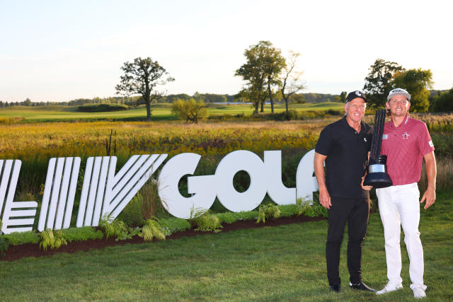

LIV Golf Shows Out For It's First Season. What Is Next For The PGA Tour.

In the rise of LIV golf over the summer we saw day by day the biggest stars in the game jumping ship for some of the largest payouts in sports. The inagural season for LIV just finished up and from what we have seen, the players are happier than they have ever been and LIV golf is here to stay. Frankly, the LIV tour this season blew away the PGA tour by booking some of the best venues in the world and signing the biggest golfers in the world. The formatting of the tournaments are also genius in the way they increase viewership and pull the non-golfing crowd to the events.
With such a lopsided race over the past 8 months we ask the question, what is the PGA going to do in response?
We have seen the PGA tour adopt a model for a short tour series that offers increased purses and added benefits for competing. The PGA tour has received some backlash for a kneejerk response to the LIV tour by taking the memberships of all players who have participated on the LIV tour. From the reactions of the players affected they do not have much to say because their focus is on the new and upcoming tour. The PGA has been a monopoly on competitive golf for it's entire history and the players are finally standing up to the bully. The PGA tour has to make a few changes to their current tournament model in order to take back control of the world golf scene: One, they have to increase the purses of the tournaments and incentivise playing with guranteed money. The PGA has plenty of money to spend so they need to allocate it to the players that have grinded their entire lives away to make it to this level. Two, the PGA tour has to improve their fan experience. The LIV tour makes their tournamnets an experience, there is more to attending an event than just spectating golf. They should offer events when the players are off the course such as meet and greets, club venues, and concerts. This pulls in the revenue from the "non-golfing" crowd. Third, the PGA tour need to relocate their events to large market cities not just in the United States, but all over the world.